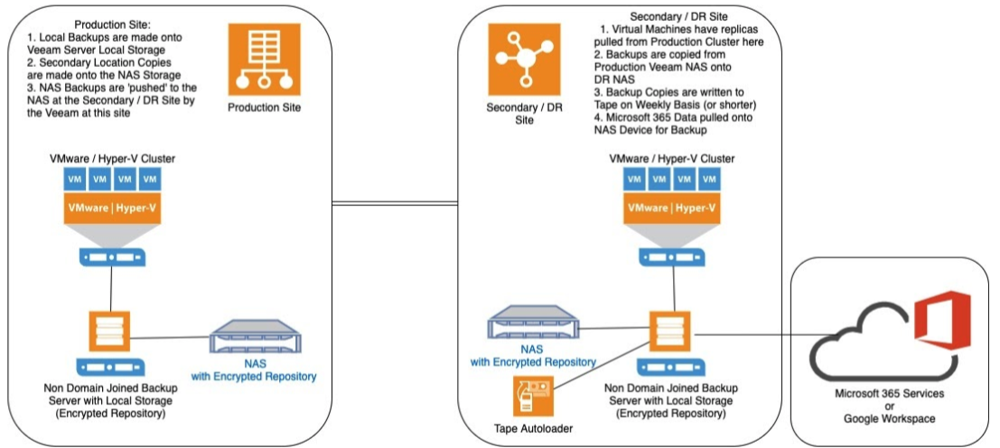

Overview of backup best practice
Objective Outline guidance and approach to best practice design features for backup and replication for all local authority virtualised council information systems
Design considerations The Backup architecture will be derived from the criticality of the systems to be recovered.
The Backup Design should be driven by the requirements for recovery, in particular:
Individual system importance (may vary depending on time of year)
Impact on service provision (consider services such as safeguarding, Rev&Bens, etc)
Different systems will have different requirements
- The Business Impact Analysis will be a driver for determining this
RPO’s and RTO’s will also be key in determining how you backup and what media you will utilise.
Finally, take into consideration your DR equipment:
Can it support your key systems if you lost your primary site ?
Can you recover from offline media here ?
Overview schematic of an ideal configuration

Veeam has been used in this example as it is the most prevalent technology in use amongst the 29 Councils reviewed.
Arcserve UDP would work in effectively the same manner.
SAN Based Snapshot systems (NetApp, Nimble etc) would be different from the technologies illustrated here
Best practices
Best practices highlighted in the schematic and additional practices are
Separation of Backup Servers from main Domain Membership
Multiple backup locations in Encrypted Repositories
Encrypt data in transit between VM’s and Backup Repositories
Replication of key VM’s
Offline Media Storage to provide an immutable copy of backups over time (using a Tape Autoloader or Immutable Storage with Cloud Services)
Backups of M365/Google Workspace to be pulled to on-premise storage
Regular Database Backups during operational hours
Why are these practices important?
Having the Backup Server not being part of the domain - This stops the backups being compromised by an attack with domain credentials
Encrypting data ‘at rest’ - This provides an extra layer of security as just being able to access the storage volumes does not give you access to the files (in this case servers) within.
Encrypting data ‘in flight’ - This provides you protection against data transfer being intercepted. It becomes very important if you are sending backup data over public networks.
Having backups in an offline (immutable) state - This allows you to recover from a CryptoLocker Situation / Total Site Loss
Separation of backup services from domain
Why is this important ? - When domains are compromised at a privileged user level all domain joined devices are at risk of attack / data loss
Removing the backup servers/appliances from the domain can slow down or stop data loss of the backups and facilitate a recovery.
This helps mitigate the risk of data interception in transit to/from the Backup Server.
How can I implement them? - Create new logons on the devices (servers and software) for users
Put the server in a unique workgroup (by removing from domain)
Block all ports unnecessary for backup operations from communicating with the server/appliance
Secondary backup locations
Benefits over a single backup location - Gives an additional storage location for multiple copies to be available and can facilitate a secondary alternate on-premise location.
Allows for an offsite location to be used as part of the backup regime - i.e. Backup to local on-premise storage overnight, ship copies to DR site during the day.
Perfect for longer term retention as NAS devices are typically used for this purpose, and larger capacities are available at lower costs than SAN based storage.
Encryption of repositories

What are they?
- Encrypted backup repositories are secure storage areas for backups
Why are they important? - They contain the backup files in an encrypted format which is not able to be read without the correct encryption keys, which are known only to source and destinations
- Only intended recipients who know the secret key can reverse encrypted information back to a readable format.
How can I implement them ? - Follow the guidance from your backup software vendor. - Veeam Best Practices are detailed at : https://bp.veeam.com/vbr/VBP/Support/S_Encryption/repository.html
Encryption in transit
What is encryption in transit? - Encryption in transit is where you use an encryption key to scramble the date pre transmission. The key is known to the source and destination only.
Why is it important? - Data encryption transforms data to an unreadable, scrambled format with the help of a cryptographic algorithm and a secret key. If encrypted data is intercepted, it cannot be unlocked and read by the eavesdropper.
- Only intended recipients who know the secret key can reverse encrypted information back to a readable format.
How can I implement it ? - Backup products such as Veeam B&R and Arcserve UDP offer the option to encrypt data ‘in flight’.
- The data is encrypted at source pre transmission.
Replication
Benefits over backups alone - Replicas afford you a faster recovery time as they can simply be powered on.
- File level recovery is still possible from a replica.
How can I implement replication? - Have a matching hypervisor technology to the source with sufficient storage.
- Use your backup and replication software to create and manage the jobs (Veeam is a perfect example of a product set to use).
Additional requirements - Network / IP Subnet remapping to be taken into account if machines are required to enter production from DR Replication location.
- Remapping would be considered best practice in order to support RTO and BCDR
Offline media
Benefits over ‘Disk to Disk’ alone - Provides an additional copy for restoration activities
- Very difficult to corrupt or infect
Types of offline media (in increasing order of TCO) - The primary type is tape. Capacities per tape can go up to 30TB native. Autoloaders with multiple drives can vastly increase capacity and reduce time to backup. Tapes should be regularly removed and securely stored.
Virtual tape libraries (VTL)
Removable disks
Immutable cloud based storage (once written it cannot be changed)
Costs are derived from the amount of data consumed at each storage level, and data ingress/egress costs.
This will vary between councils and a major factor will be how often data is required to be recovered.
How can I implement offline media? - Tape Autoloaders or Removable Disks can be added to backup servers
- Cloud Storage Gateways can be added to backup servers
But what if I already replicate my file shares as CIFS shares direct from my SAN? - By having an offline copy of the data will allow a restore if your data is compromised by an attack.
- Use technologies such as NetApp SnapVault to give you immutable copies or multiple read/write points away from your primary snapshot.
Cloud based email and associated services
‘But Surely Microsoft / Google back this up for me ?’
Microsoft 365 provides powerful services within Office 365 – but a comprehensive backup of your Microsoft 365 data is not one of them.
Of over 1,000 IT professionals surveyed, 81% experienced data loss in Microsoft 365, from simple user error to major data security threats. (Source: https://www.veeam.com/backup-microsoft-office-365.html)
With Microsoft 365, it’s your data, you control it and it is your responsibility to protect it. The same is said for Google Workspace.
Microsoft and Google offer you limited recovery periods from deletion of your data, but if your data is compromised then so are the copies they keep. Data retention periods vary and can be altered, but the maximum ‘recycle bin storage’ is approximately 30 days
Market leading technologies for Microsoft 365 data protection are available from:
Veeam (backup to an on-premise target or cloud based target)
Arcserve
Skykick (cloud based target)
Other providers are available (BackupVault, Backblaze, etc)
Database services backups
How often should I backup up my production databases?
The answer is based around how much data loss you can survive.
Improve your database backups by taking regular snapshots or transaction log backups
Carry out multiple backups per day
Allows you to have a much shorter RPO.
Data will be stored in a secondary location
Transaction (TX) Log Backups
Configure in line with desired recovery timeframes
The higher the frequency, the shorter the RPO - so this is important to consider in your Business Continuity Planning.
More frequent TX Log Backups combined with regular ‘Full’ backups will give you a more recent recovery point in the event of database corruptions.
Options for immutable storage with SAN replication
SAN Based Replication (Example is NetApp SnapVault)

This technology allows for SAN based replication to have immutable copies at the DR site (Vaulted).
It’s not offline as such but it is unchangeable (but will be removed as part of an ‘ageing out’ of the ‘Snaps’).
Additional licensing over standard NetApp ones will be required.
Cloud Based Storage Example
Cloud based targets
Such as Amazon Web Services S3 / Glacier / Deep Glacier
By introducing this tech via an on-premise gateway you can send immutable copies of data into offsite storage with long term retention periods. This does have data transit costs, along with storage costs at each layer.
Veeam and other Backup Software Providers have ‘Gateway’ products to interface with AWS / MS-Azure for Backup Storage technologies.